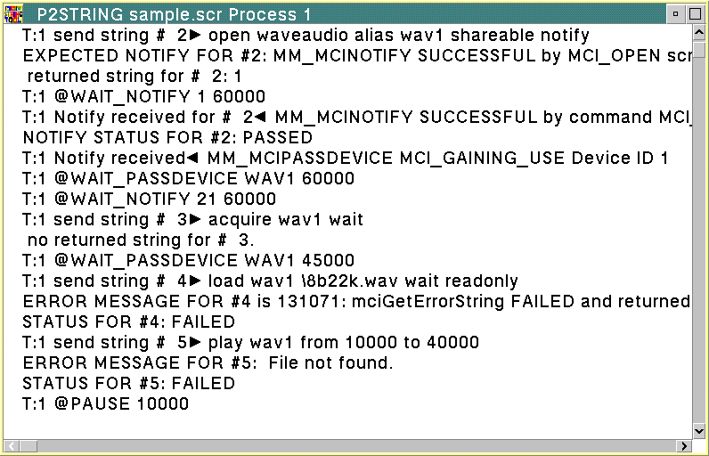

The P2STRING tool processes script files (containing string commands and tool directives) to test the behavior of subsystems in OS/2 multimedia. P2STRING extracts the strings from the script files and processes the commands through the mciSendString function. Messages and error conditions of the processes included in the scripts are logged to an output file and displayed in windows (as shown in the following figure). Each process logs to its own display window, but all processes log to the same output file. In addition, if you close the display window, the string execution thread is immediately destroyed and the entire process ends.
Output messages include all non-comment lines read from the script (for example, script directives, command strings, expected return values, expected and received notify messages, and status lines). In addition, errors and debugging statements of unsuccessful string commands are logged to a file named P2STRING.LOG file.